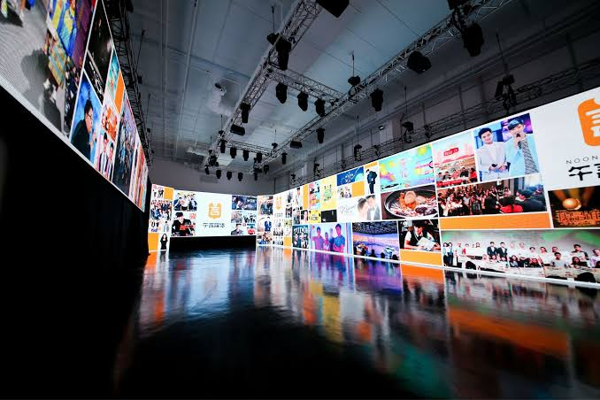

Fourteen artistes
Eight local and six Thai artists were named in FY2026, including Xu Bin, Kimberly Chia, Zong Zijie and Angel Lim.
Strategy and commercial review · SGX: SEJ
Busy enough to look healthy, priced too thin to pay its way.
A founder-funded Mandarin media house with recognisable talent, recurring clients and new bets in micro-dramas, China and the Golden Singa Awards. The unresolved question is whether any of them can produce the margin needed to carry a listed company.

00 · Evidence · Research score
NoonTalk sits in the Fragile band. A known founder, repeat relationships and two balanced operating segments create options, but four loss-making years, negative equity and a going-concern warning zero out Financial Strength.
Fragile · sensitivity range 18-25.
This score measures business quality and future potential, not the share price.
The score is close to other distressed media names, despite a simpler company and a committed owner.
New formats and balanced segments lift the score. Negative equity and emergency funding hold it back.
| Component | Weight | Rating | Points | Assessment |
|---|---|---|---|---|
| Revenue CAGR | 6 | 0 | 0.0 | -11.8% a year, FY2022-26. |
| Net margin | 7 | 0 | 0.0 | Losses in FY2023-26. |
| ROIC / ROE | 9 | 0 | 0.0 | Negative returns and equity. |
| Cash-flow stability | 9 | 0 | 0.0 | Operating cash negative in all five years. |
| Balance sheet | 9 | 0 | 0.0 | Going-concern flag and founder loans. |
| Component | Weight | Rating | Points | Assessment |
|---|---|---|---|---|
| Brand recognition | 2 | 2 | 0.8 | Known in Singapore Mandarin media. |
| Competitive advantage | 7 | 1 | 1.4 | Artiste roster, limited pricing power. |
| Market share | 4 | 1 | 0.8 | Small player in a fragmented market. |
| Customer relationships | 5 | 2 | 2.0 | Recurring clients and steady event revenue. |
| Geographic reach | 2 | 1 | 0.4 | 93% of FY2026 revenue from Singapore. |
| Component | Weight | Rating | Points | Assessment |
|---|---|---|---|---|
| Industry growth | 6 | 2 | 2.4 | Entertainment and media grows slowly overall. |
| Technology adoption | 4 | 2 | 1.6 | AI tools in use, benefit undisclosed. |
| New markets | 6 | 2 | 2.4 | Chengdu unit and first China contract. |
| Diversification | 5 | 3 | 3.0 | Two segments at 56% and 44%. |
| Partnerships | 4 | 2 | 1.6 | Awards partner and early MoUs. |
| Component | Weight | Rating | Points | Assessment |
|---|---|---|---|---|
| Economic resilience | 3 | 0 | 0.0 | Going-concern warning. |
| Customer diversification | 4 | 2 | 1.6 | Not disclosed; rated 2 by rule. |
| Technology resilience | 3 | 2 | 1.2 | Not disclosed; rated 2 by rule. |
| Regulatory resilience | 2 | 3 | 1.2 | No known breach. |
| Operational resilience | 3 | 1 | 0.6 | Key-person risk and lower headcount. |
01 · Exhibit · Company snapshot
Founded by former YES 933 DJ Dasmond Koh in 2011, NoonTalk manages artists, produces multimedia work and runs events. Its network opens doors; its economics still resemble a project house.
Artistes enter casting, hosting and brand work.
Video, film, drama and micro-dramas.
Events, livestreams and awards.
Broadcasters, platforms and China campaigns.
Margin is most defensible when NoonTalk's talent and owned formats are attached to the project.
Eight local and six Thai artists were named in FY2026, including Xu Bin, Kimberly Chia, Zong Zijie and Angel Lim.
Dasmond Koh owns 65.41%; Xun TingTing 5.04%; COO Zheng Xianbin 3.27%; public holders 26.19%.
The company listed in November 2022 at S$0.22 and raised S$4.84m gross.
NoonTalk's official site describes a company spanning artiste management, multimedia production and event conceptualisation.
02 · Exhibit · Divisions
Production is larger and volatile. Management and events are steadier but absorbed Golden Singa start-up costs. Corporate and listing costs remain above the profit either division has produced.
S$2.14m FY2026 revenue, down 53%; pre-tax loss S$0.08m.
S$1.71m revenue, broadly flat; pre-tax loss S$0.76m.
Revenue can move by roughly S$2m as tender timing changes.
The steadier line, though profitability still swings.
Head-office cost across FY2023-26 against S$18.7m of revenue.
| FY | Production revenue | Production PBT | Management/events revenue | Management/events PBT |
|---|---|---|---|---|
| 2023 | S$2.41m | +S$0.17m | S$1.77m | -S$0.84m |
| 2024 | S$2.59m | -S$1.79m | S$1.85m | -S$0.05m |
| 2025 | S$4.54m | -S$0.43m | S$1.72m | +S$0.18m |
| 2026 | S$2.14m | -S$0.08m | S$1.71m | -S$0.76m |
A second edition was planned at lower cost, but sponsorship, ticket and broadcast income were not disclosed in the review.
03 · Evidence · Financials
Revenue recovered in FY2025 and fell again in FY2026. Costs did not flex fast enough: operating cash burn reached S$2.16m and the gross loss showed jobs were priced below delivery cost.
FY2025 volume improved but only produced a 7.9% gross margin. FY2026 fell below zero.
| FY | Revenue | Gross margin | Net result | Operating cash |
|---|---|---|---|---|
| 2022 | S$6.37m | 27.5% | +S$0.02m | -S$0.33m |
| 2023 | S$4.18m | 4.6% | -S$3.24m | -S$1.68m |
| 2024 | S$4.44m | 3.1% | -S$3.81m | -S$0.88m |
| 2025 | S$6.26m | 7.9% | -S$1.80m | -S$0.90m |
| 2026 | S$3.85m | -17.6% | -S$2.56m | -S$2.16m |
FY2026 loss bridge: S$2.41m lower revenue, partly offset by S$1.24m lower cost of sales and S$0.37m lower administration costs.
04 · Evidence · Funding and control
The 2022 IPO raised S$4.84m. Four years later, operating cash burn and listing costs had consumed the cushion; Dasmond Koh converted S$1.8m of loans into equity at twice the market price.
S$4.84m IPO, S$1.80m founder loans and S$0.75m convertible.
Operations, leases, listing costs and debt repayment.
About two months of FY2026 operating outflow.
Debt capitalisation was minority-friendly on price, but deepened reliance on one person.
Current assets to current liabilities at June 2026.
After S$1.8m of founder loans became shares.
S$0.75m repayable in December 2026 unless extended or converted.
| Item | FY2025 | FY2026 |
|---|---|---|
| Cash | S$0.69m | S$0.40m |
| Receivables | S$1.10m | S$0.54m |
| Total assets | S$2.41m | S$1.58m |
| Borrowings | S$0.55m | S$2.51m |
| Total liabilities | S$2.81m | S$4.51m |
| Total equity | -S$0.40m | -S$2.93m |
The listing price was S$0.22; founder debt converted at S$0.11; the review used a last close of S$0.055 on 26 October 2026.
05 · Decision · Valuation and scenarios
At the review date, roughly S$12m of market value paid for optionality around awards, China and micro-dramas. The base case still required external funding; the bull case needed several bets to work together.
Revenue about S$3m at 0% gross margin. Production keeps shrinking and awards stay costly.
Revenue about S$5.5m at FY2025's 7.9% gross margin. Outside funding is still needed.
Revenue about S$8m at 20% margin. Awards, China and micro-drama all contribute.
| Company | Main business | Latest revenue | Gross margin | Net margin |
|---|---|---|---|---|
| NoonTalk | Talent, production, events | S$3.8m | -17.6% | -66.5% |
| G.H.Y | TV and film for China | RMB511m | 19.2% | 1.7% |
| UnUsUaL | Concerts and events | S$43.6m | 3.6% | -20.9% |
| mm2 Asia | Film and TV | S$4.7m | n/m | n/m |
Illustrative FY2028 cases assume overhead remains near S$1.8m. They are analytical scenarios, not company guidance.
06 · Evidence · Demand transmission
Corporate confidence, public tenders and platform budgets create projects. Most crews, venues and equipment are bought in, so the decisive variable is not simply demand; it is how much value remains after delivery.
Corporate marketing, state tenders or platform spend.
Open tender favours volume and reliability.
Crews, kit and venues move into cost of sales.
Margin remains only after outsourced work.
That is nearly four times the highest revenue NoonTalk has booked. At a 20% margin the threshold falls to S$9.4m; at FY2022's 27.5%, S$6.8m.
| Buyer | What they want | How they choose | Margin signal |
|---|---|---|---|
| Government | Reliable delivery | Open tender, often price-led | Thin |
| Brands | Reach and a known face | Relationships and talent | Better with artistes |
| Broadcasters | Actors, hosts and content | Audience pull and availability | Steady, concentrated |
| Audiences | Stories and stars on phones | Habit and pay-per-episode | Unproven |
Annual global entertainment and media growth forecast.
2026 global ad growth forecast in the source review.
Estimated global 2025 revenue, with China dominant.
07 · Evidence · Frameworks
Rivalry, buyer power, substitutes and new entry all run high. The company is strongest where a roster, cultural identity and event execution combine; it is weakest where distribution or balance-sheet capacity decides the outcome.
Studios, agencies and freelancers chase the same tenders.
One broadcaster leads local Mandarin TV and public buyers bid on price.
Crews and vendors absorbed 92-118% of FY2025-26 revenue.
Creators sell reach directly and AI tools lower production cost.
Production needs little capital; a credible talent roster takes longer.
The state is a client and funder, while cautious clients cut large productions first.
Short video and AI suit micro-drama, but every competitor gains the same tools.
Quarterly reporting, China content rules and incomplete Scope 3 disclosure add work.
The Chengdu unit's first platform-marketing contract was undisclosed and not material. The awards created prestige but its payback has not been shown.
08 · Decision · Risk matrix
Select a risk to inspect its trigger and mitigation. Probability and impact are stated in words so the matrix does not depend on colour alone.
The auditor flagged material uncertainty about going concern in FY2025 and FY2026.
Formal independence is sound, but funding remains concentrated in the CEO.
Headcount fell 37% from FY2024 to FY2026; training fell to 5.8 hours each.
Gross margin needed at FY2025 revenue to cover overhead.
Gross profit per extra S$1m of sales at FY2025 margin.
FY2026 operating cash outflow per month.
09 · Decision · Strategy and outlook
The company does not need more activity before it has a runway and a margin rule. The sequence below treats new formats as earned options, not substitutes for financial discipline.
Settle or extend the convertible and agree multi-year liquidity.
Bid only where a 20% gross margin is possible; attach talent.
Sell sponsors and China broadcast rights before spending.
Retain rights in micro-dramas and cap China capital.
Interactive FY2028 scenario
Volume returns to FY2025 levels but pricing does not.
Illustrative
FY2025 level
External funding still needed
The company occupies a recognisable place in Singapore's Mandarin entertainment network.
Low gross margins cannot carry roughly S$1.9m of annual overhead.
The convertible outcome, then whether every quarter produces positive gross profit.
The score rises with clean funding, positive gross profit and owned revenue. It falls if founder support ends or the loan cannot be resolved.
Sources and evidence
Evidence grade B. About 70% of weighted evidence is audited or independently verified.
Research standard
Figures are in Singapore dollars unless stated. Data are as of 3 November 2026. This is independent research for education, not investment advice or a price target.
Company imagery was supplied with the research brief and is presented as editorial evidence.